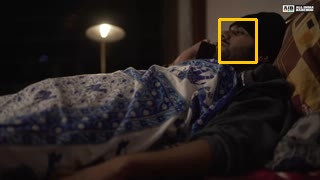
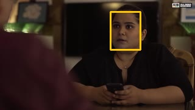
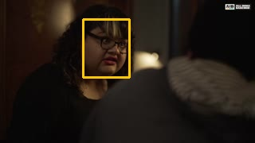
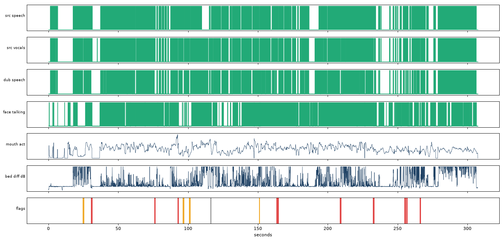

pair mode, 307.6 s, analysis every 50 ms, faces at 8.0 fps.

| speech_seconds_source | 238.5 |
| speech_seconds_dub | 225.7 |
| source_speech_covered_by_dub_pct | 90.9 |
| dub_speech_inside_source_speech_pct | 96.0 |
| face_on_screen_pct | 94.7 |
| mouth_activity_vs_source_speech_auc | 0.623 |
| mouth_threshold_balanced_acc | 0.61 |
| visual_flag_confidence | "medium" |
| mouth_vs_source_speech_lag_ms | 0 |
| mouth_vs_source_speech_corr | 0.448 |
| mouth_vs_dub_speech_lag_ms | 0 |
| mouth_vs_dub_speech_corr | 0.357 |
| bed_level_diff_db_median | 0.09 |
| bed_ducked_seconds | 0.0 |
| dialogue_vs_source_voice_db_median | 0.0 |
| line_level_diff_db_mean_abs | 0.27 |
| lines_level_diff_over_6db | 0 |
| clipped_samples | 0 |
| sample_peak_dbfs | -0.13 |
| bed_sync_per_30s_lag_ms | [[0, 0, 0.91], [30, 0, 0.98], [60, 0, 0.9], [90, 0, 0.76], [120, 0, 0.78], [150, 0, 0.8], [180, 0, 0.86], [210, 0, 0.81], [240, 0, 0.87], [270, 0, 0.62]] |
| loudness_source | {"integrated_lufs": -15.9, "true_peak_dbtp": 0.9, "lra_lu": 16.5} |
| loudness_dub | {"integrated_lufs": -16.5, "true_peak_dbtp": -0.1, "lra_lu": 15.9} |
| flags | {"dub_over_source_silence": 1, "speech_not_dubbed": 3, "talking_face_dub_silent": 9, "vocals_dropped": 1} |
| flags_by_severity | {"high": 9, "medium": 4, "low": 1} |
| flagged_seconds_high | 7.0 |
| time (s) | kind | severity | line | why | detail | frame |
|---|---|---|---|---|---|---|
| 24.50-25.25 | speech_not_dubbed | medium | L002b | the original has speech here but the dub track is silent | {"variant": "rw", "en": "No man don't book mine, puking since morning, high fever.", "tempo": 1.0, "gain": 0.95} |  |
| 30.45-31.20 | talking_face_dub_silent | high | L003 | a face on screen is moving its mouth while the original has speech, but the dub is silent | {"variant": "rw", "en": "Typhoid and stuff? Are you crazy? There's no such thing, bro, just get out and have fun.", "tempo": 1.0, "gain": 0.77} | |
| 75.80-76.55 | talking_face_dub_silent | high | L007 | a face on screen is moving its mouth while the original has speech, but the dub is silent | {"variant": "rw", "en": "This fever burning could be one thing. If you're smiling and you have typhoid, how can you have both? Are you sure you didn't get typhoid because Garima broke up with you? Go get on Tinder. Your typhoid, vomiting, diarrhea will all go away.", "tempo": 1.0, "gain": 1.0} | |
| 92.55-93.20 | talking_face_dub_silent | high | L013 | a face on screen is moving its mouth while the original has speech, but the dub is silent | {"variant": "en", "en": "Jogging every morning gives you perspective and typhoid goes away. Perspective up, typhoid go go.", "tempo": 1.0, "gain": 0.99} | |
| 96.10-96.95 | speech_not_dubbed | medium | L014 | the original has speech here but the dub track is silent | {"variant": "en", "en": "Listen, Nikhil's friend was saying that", "tempo": 1.0, "gain": 0.36} | |
| 100.60-101.50 | speech_not_dubbed | medium | L015 | the original has speech here but the dub track is silent | {"variant": "en", "en": "Nikhil has some fever thing. You haven't told anyone he has a fever, right?", "tempo": 1.0, "gain": 0.57} |  |
| 115.85-116.50 | vocals_dropped | low | the original has voice sound outside any dubbing line (laugh, breath, shout, crowd) that is missing in the dub | {} | | |
| 150.85-151.20 | dub_over_source_silence | medium | the dub speaks where the original is silent (spill or early start); a mouth is moving | {} | ||
| 163.35-164.75 | talking_face_dub_silent | high | L026 | a face on screen is moving its mouth while the original has speech, but the dub is silent | {"variant": "en_short", "en": "You know Nisha's marriage broke up? Do you know Payal?", "tempo": 1.0, "gain": 1.26} |  |
| 208.55-209.40 | talking_face_dub_silent | high | L035 | a face on screen is moving its mouth while the original has speech, but the dub is silent | {"variant": "en", "en": "It'll be fine. Maybe you need to change your job, your house, your city, your state, your continent. Or just change yourself.", "tempo": 1.0, "gain": 1.31} | |
| 232.40-233.20 | talking_face_dub_silent | high | L040 | a face on screen is moving its mouth while the original has speech, but the dub is silent | {"variant": "rw", "en": "You don't have typhoid, you just need a long vacation. Come to the movies with us.", "tempo": 1.0, "gain": 2.73} | |
| 254.90-255.65 | talking_face_dub_silent | high | L049 | a face on screen is moving its mouth while the original has speech, but the dub is silent | {"variant": "rw", "en": "Don't tell anyone. I know nothing. Why would I say?", "tempo": 1.127, "gain": 0.42} | |
| 256.40-256.90 | talking_face_dub_silent | high | L049 | a face on screen is moving its mouth while the original has speech, but the dub is silent | {"variant": "rw", "en": "Don't tell anyone. I know nothing. Why would I say?", "tempo": 1.127, "gain": 0.42} | |
| 265.85-266.45 | talking_face_dub_silent | high | L051 | a face on screen is moving its mouth while the original has speech, but the dub is silent | {"variant": "en", "en": "It's typhoid, it's like any other illness. If we keep whispering about it like this...", "tempo": 1.0, "gain": 0.33} |